6 projector grammar games and 640 original sentences (A1–B2) in one offline HTML file. Tick a grammar point, pick a game, play in teams. No internet, no accounts.
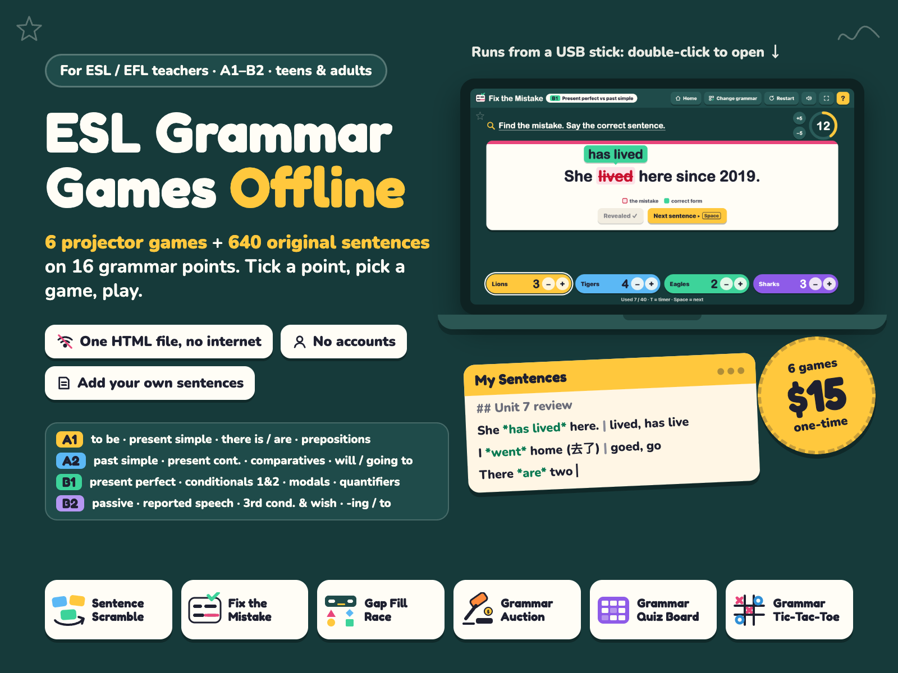
$15.00 USD, one-time (no subscription)
Buy now: $15 Free offline demo (HTML)14-day no-questions refund. Email us within 14 days of purchase and we refund you in full. You don't need to give a reason.
Works-on-your-school-computer guarantee. If the file won't open on your school computer and we can't fix it with you, you get a full refund.
Secure checkout. Payment is handled by Waffo Pancake, our merchant of record, which accepts the usual payment methods. We never see your card details.
Bug fixes and browser updates. If a browser update or a bug ever stops the file working, email us and we send you the fixed file free.
This is a new shop with no reviews yet, and we won't invent any. Instead, every picture below is a real screenshot or a real PDF page, and you can run the free demo offline on your own school computer before you pay.
She *has lived* here since 2019. | lived, has live, is living, save up to 20 sets of up to 300 sentences, import / export .txt.Download free-demo.html (one file, no email, no signup), copy it to the school computer or a USB stick and double-click it. If the demo runs, the full version runs too: it is the same code.
The demo has 2 games (Sentence Scramble and Gap Fill Race), 2 grammar points (A1 Verb to be and A2 Past simple, 12 sentences each) and up to 12 of your own pasted sentences. The full version adds:
Real screenshots of ESL-Grammar-Games.html.
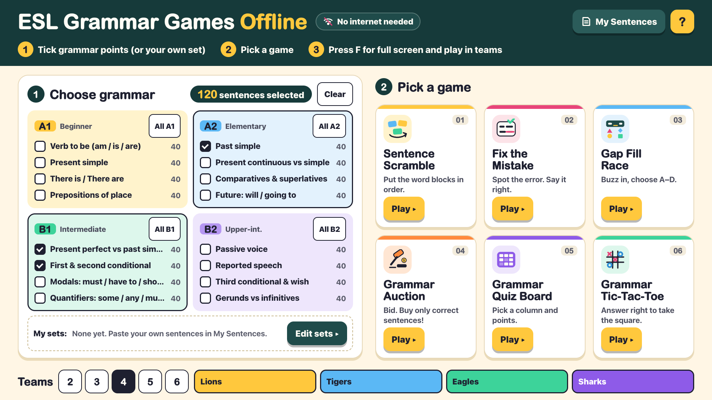
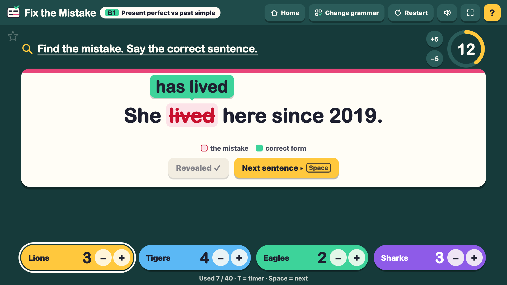
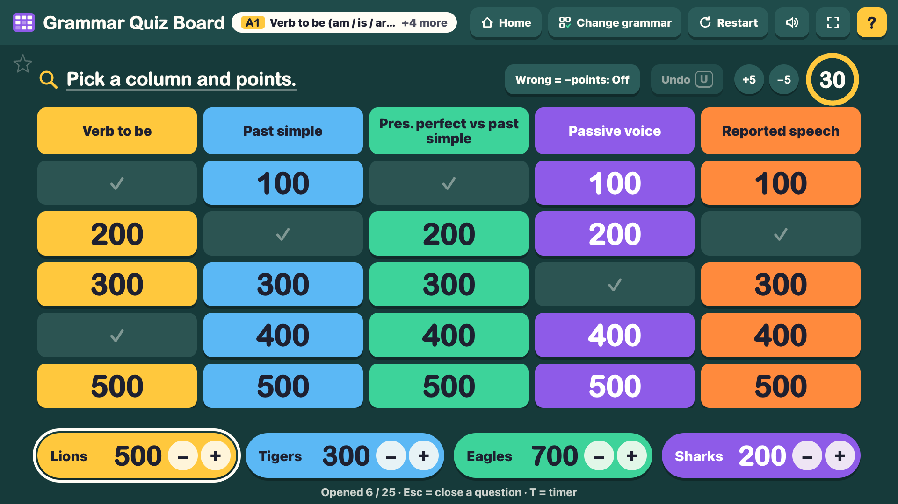
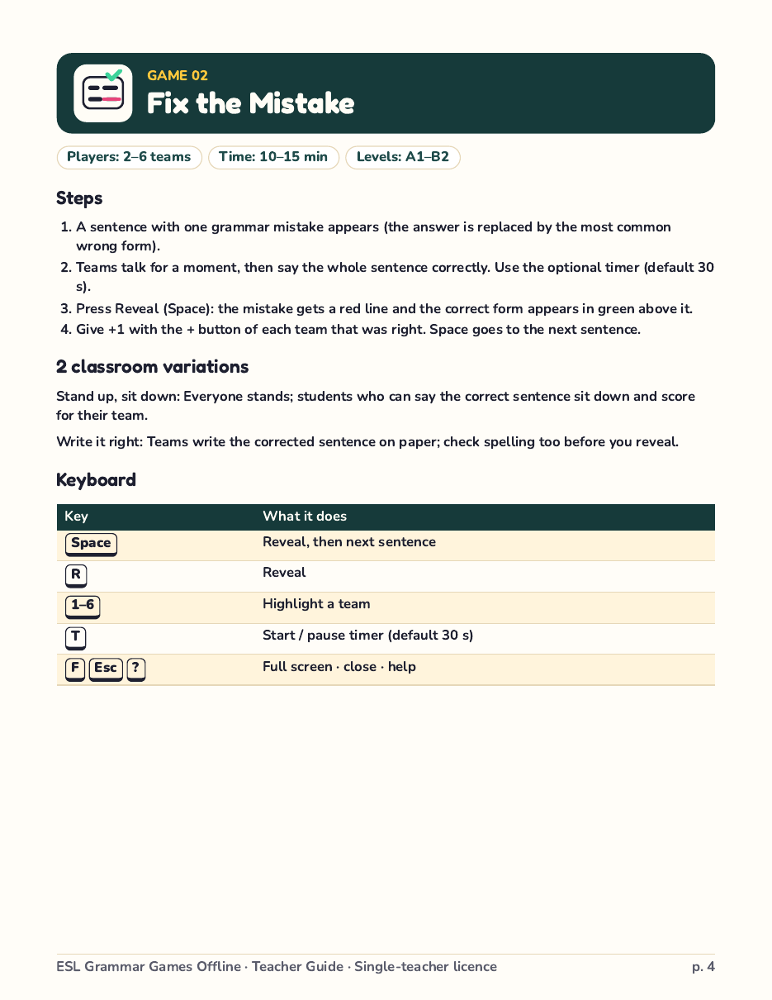
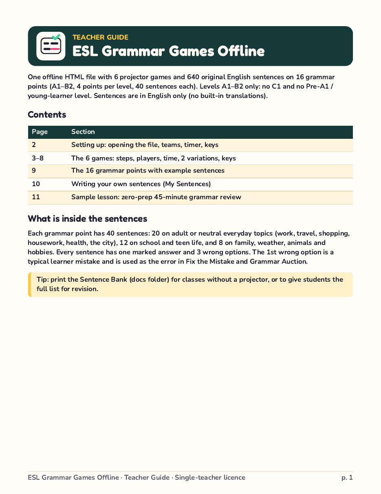
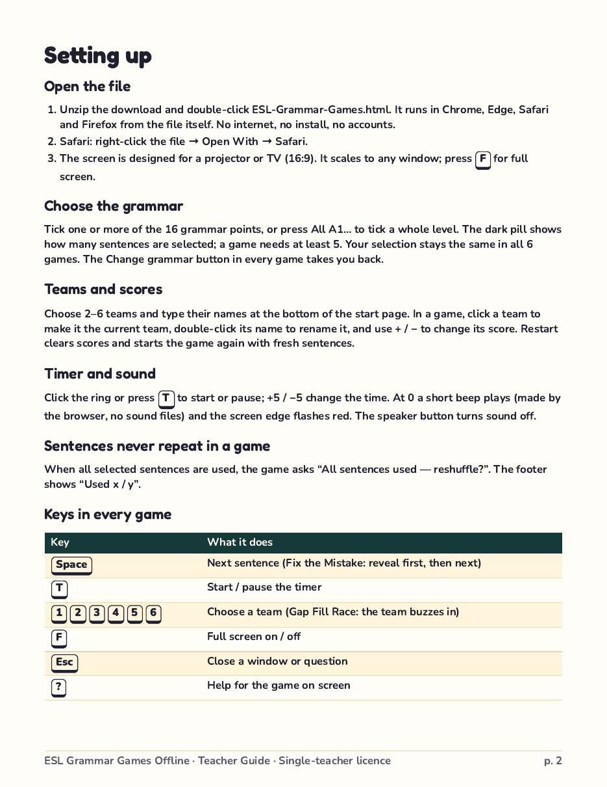
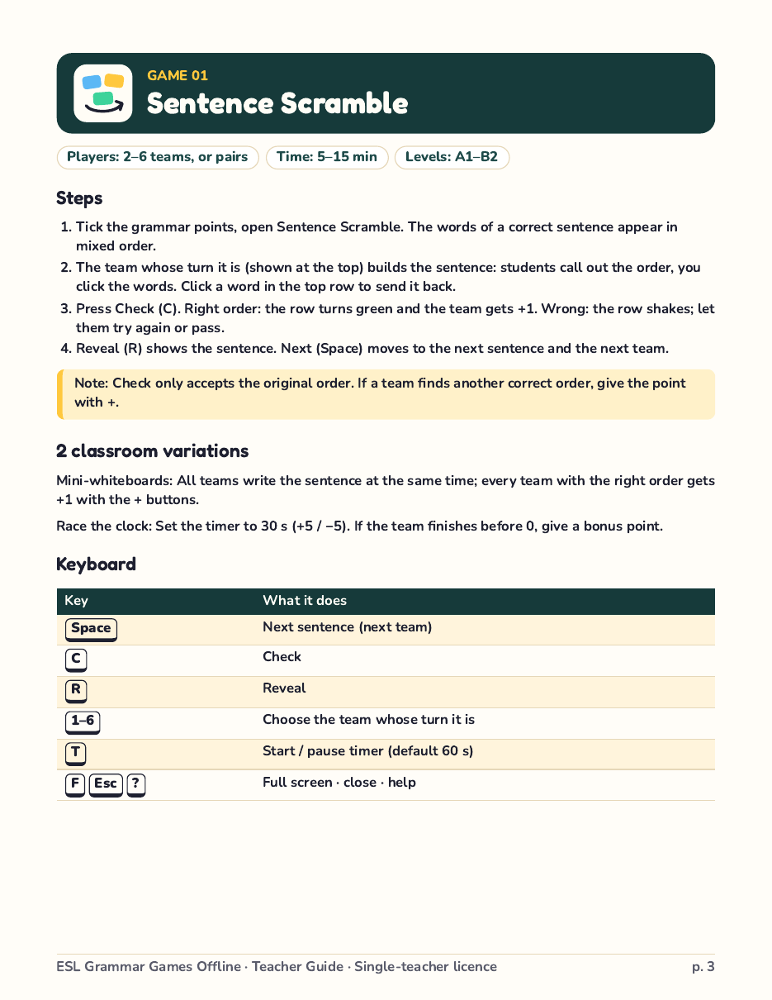
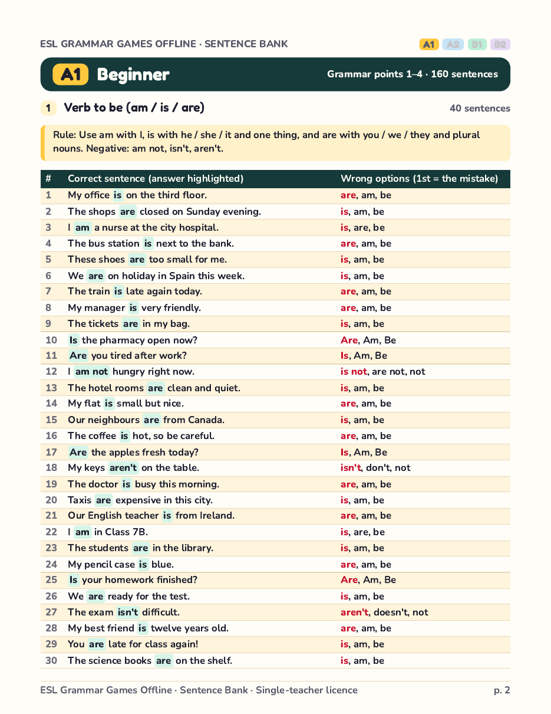
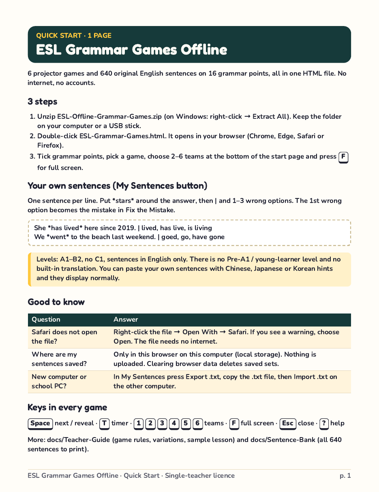
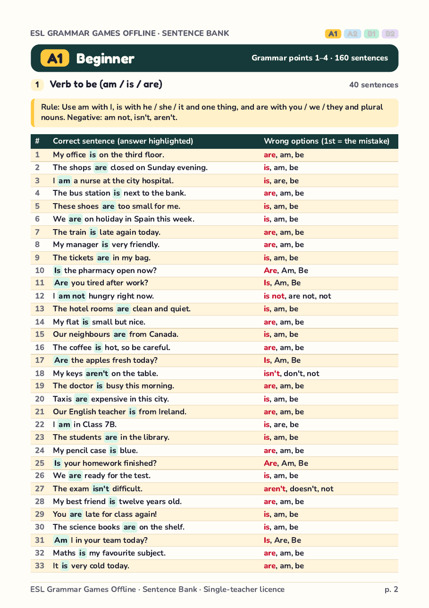
B1 · 9. Present perfect vs past simple. Rule: Past simple for finished time (yesterday, in 2019, two years ago, when…?). Present perfect (have / has + past participle) for experience and with since, for, already, yet, ever, never and just.
| # | Correct sentence (answer highlighted) | Wrong options (1st = the mistake) |
|---|---|---|
| 1 | She has lived here since 2019. | lived, has live, is living |
| 2 | I bought this car two years ago. | have bought, buyed, has bought |
| 3 | Have you ever been to Japan? | Did you ever been, Have you ever went, Were you ever |
| 4 | We visited Rome last summer. | have visited, visit, have visit |
| 5 | He has worked for this company for ten years. | works, has work, is working |
| 6 | I have already finished the report. | have already finish, already have finish, has already finished |
B2 · 13. Passive voice (all main tenses). Rule: be in the right tense + past participle: is made, was built, is being repaired, has been sold, will be finished, must be returned. Use by to say who did the action.
| # | Correct sentence (answer highlighted) | Wrong options (1st = the mistake) |
|---|---|---|
| 1 | This bridge was built in 1890. | was build, built, is built |
| 2 | English is spoken in many countries. | is speak, speaks, spoken |
| 3 | The new hospital will be finished next year. | will finished, will be finish, is finish |
| 4 | My car is being repaired at the moment. | is repairing, is being repair, being repaired |
| 5 | The office is cleaned every evening. | is cleaning, cleans, cleaned |
| 6 | All the tickets have been sold. | have sold, have been sell, has been sold |
Sample lesson: zero-prep 45-minute grammar review. Example: B1 · Present perfect vs past simple · 4 teams · Projector
| Time | Game | What you do |
|---|---|---|
| 0–5 min | Set-up | Open the file, tick B1 “Present perfect vs past simple”, set 4 teams and names. Write the rule from the Sentence Bank on the board. |
| 5–15 min | 02 Fix the Mistake | 8–10 sentences. Teams say the correct sentence; you reveal and give +1. Ask “Why?” after each reveal (since / ago / ever). |
| 15–25 min | 03 Gap Fill Race | 10 sentences, 15-second timer. Fast buzzing, A–D answers. Keep the scores on the board. |
| 25–40 min | 04 Grammar Auction | 10 lots, 1000 each. Teams discuss before every bid. Reveal all and discuss each wrong sentence. |
| 40–45 min | Wrap-up | Teams add their totals from the three games. Students write 2 sentences of their own; type the best ones into My Sentences for next lesson. |
Grammar review lessons are easier when students play in teams, but many classrooms have slow or blocked internet, and students often cannot make accounts. ESL Grammar Games Offline is one HTML file that runs in Chrome, Edge, Safari or Firefox with no internet connection.
Open the file, tick one or more grammar points (or your own set), pick a game and press F for full screen. The selection stays the same in all 6 games, so you can play Fix the Mistake, then Gap Fill Race, then a Grammar Auction on the same grammar without any preparation.
The sentences: 640 original English sentences, 40 for each of 16 grammar points: to be, present simple, there is / are, prepositions of place (A1); past simple, present continuous vs simple, comparatives & superlatives, will / going to (A2); present perfect vs past simple, first & second conditional, modals, quantifiers (B1); passive voice, reported speech, third conditional & wish, gerunds vs infinitives (B2). In every grammar point, 20 sentences are about adult or neutral everyday life (work, travel, shopping, housework, health, the city), 12 about school and teen life and 8 about family, weather, animals and hobbies, so the bank fits teens and adult classes.
Honest limits: levels A1–B2 only (no C1, no Pre-A1 / young-learner level). The built-in sentences are in English only with no translations. Your own pasted sentences can include Chinese, Japanese or Korean hints and display normally. Saved sets stay in the browser on that computer; use Export .txt to move them.
One download, ESL-Offline-Grammar-Games.zip. After you pay, the download page also lists every file separately. Unzipped:
ESL-Offline-Grammar-Games/
ESL-Grammar-Games.html 6 games + 640 sentences (1 offline file)
LICENSE.txt single-teacher licence
docs/
Quick-Start-Letter.pdf 1 page
Quick-Start-A4.pdf 1 page
Teacher-Guide-Letter.pdf 11 pages
Teacher-Guide-A4.pdf 11 pages
Sentence-Bank-Letter.pdf 33 pages
Sentence-Bank-A4.pdf 33 pages
ESL-Grammar-Games.html: the start page, 6 games, 640 built-in sentences and the My Sentences panel (1 file, offline)docs/Quick-Start-Letter.pdf and docs/Quick-Start-A4.pdf: 1 page eachdocs/Teacher-Guide-Letter.pdf and docs/Teacher-Guide-A4.pdf: 11 pages each (setup, 1 page per game with steps, players, time, 2 variations and keys, the 16 grammar points, writing your own sentences with 5 examples, a 45-minute sample lesson)docs/Sentence-Bank-Letter.pdf and docs/Sentence-Bank-A4.pdf: 33 pages each, all 640 sentences with the answer and 3 wrong options, a rule note for each grammar pointLICENSE.txt: single-teacher licenceDo I need internet?
No. The file runs from your computer or a USB stick with no internet and no install.
Does it work on a school computer where I cannot install software?
Yes, if the computer has a modern browser (Chrome, Edge, Safari or Firefox). Nothing is installed. In Safari, right-click the file and choose Open With → Safari.
Which browsers?
Built for the current versions of Chrome, Edge, Firefox and Safari (standard HTML/JS, no plug-ins). Internet Explorer is not supported. If your school computer is old, open the free demo first: if the demo runs, the full version runs too (same code).
Can I use my own sentences?
Yes. Paste one per line with the answer in *stars* and 1–3 wrong options after |. They work in all 6 games. You can save up to 20 sets of up to 300 sentences and import or export .txt files.
Will clearing the browser cache delete my sentences?
Yes, it can: My Sentences are saved in that browser's local storage. Press Export .txt before clearing the cache or changing computers, then Import .txt to bring them back. The 640 built-in sentences are inside the file and are never lost.
Is student data collected?
No. There are no accounts and no tracking. Your saved sets stay in your browser on that computer.
Can I print the sentences?
Yes. The Sentence Bank PDF (Letter and A4) lists all 640 sentences with answers and wrong options, and the licence allows printing for your own classes.
Can I print for several classes? Can I share it with a colleague?
You can print the Sentence Bank, Quick Start and Teacher Guide as often as you need, for all of your own classes and students. Please don't forward the files to other teachers; each teacher needs their own copy (see LICENSE.txt).
I teach at two schools (for example an ALT rotating between schools). Is that one licence?
Yes. The licence is per teacher, not per school: you can use and print it in all of your own classes at every school where you teach, on the school PCs, your laptop or a USB stick. It does not cover other teachers at those schools.
What about bug fixes and browser updates?
Email chenphien@gmail.com (we reply within 2 business days). If a browser update or a bug stops the file working, we fix it and send you the fixed file free. Bookmark your download page so you can download the files again.
What if it doesn't work for me?
Email us within 14 days of purchase for a full refund, no questions asked (see Terms). And if the file won't open on your school computer and we can't fix it with you, you get a full refund.
Licence: one teacher, all of your own classes and devices. Not for resale or sharing.
$15.00 USD, one-time
Buy now: $15Secure checkout by Waffo Pancake (merchant of record). Instant download after payment. Single-teacher licence. 14-day no-questions refund.